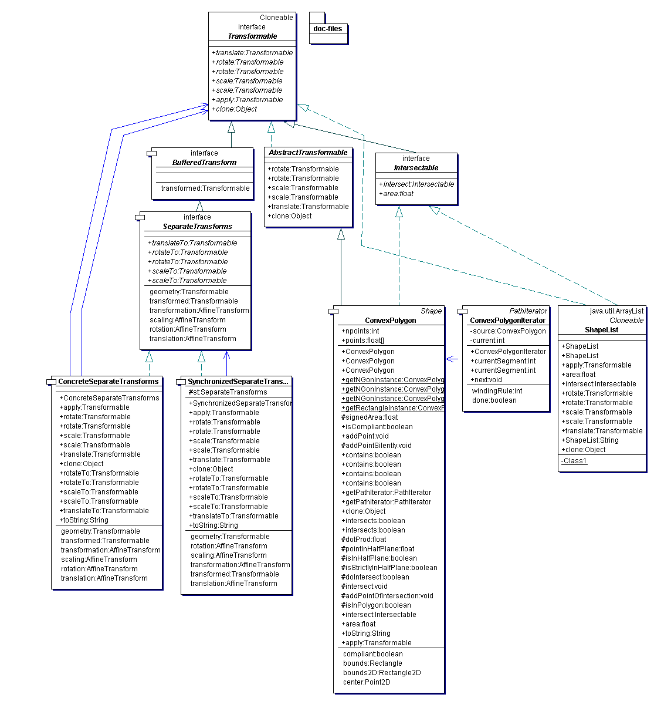

graphics package are the interfaces {@link ch.unizh.ini.friend.graphics.Transformable}
and {@link ch.unizh.ini.friend.graphics.Intersectable}. Transformable means that the object can be transformed
by a number of methods, and Intersectable means that the object's area can be computed and its intersection shape with
other Intersectable can be obtained.
The transformations that can be applied are buffered -- each of the possible transforms (rotations, scaling, and translation} are separately buffered and each can be manipulated. The possible transformations are specified by the interface {@link ch.unizh.ini.friend.graphics.SeparateTransforms}. Another interface, {@link ch.unizh.ini.friend.graphics.BufferedTransform}, specifies how the resulting {@link ch.unizh.ini.friend.graphics.Transformable} can be obtained with the transforms applied.
The basic shape is a {@link ch.unizh.ini.friend.graphics.ConvexPolygon}, which is a Transformable that inherits its
transformation methods from {@link ch.unizh.ini.friend.graphics.AbstractTransformable}.
A {@link ch.unizh.ini.friend.graphics.ShapeList} is a collection of Transformable that can be transformed as a whole.
The basic transform is {@link ch.unizh.ini.friend.graphics.ConcreteSeparateTransforms}, which implements {@link ch.unizh.ini.friend.graphics.SeparateTransforms}.
The relation between a shape like a ConvexPolygon and its SeparateTransforms should be kept clear.
The transforms are constructed from a shape. This lets the transforms implement {@link ch.unizh.ini.friend.graphics.BufferedTransform#getTransformed}
so that you can obtain the transformed shape.
The relation between buffered transforms and transformations should also be kept clear. A {@link ch.unizh.ini.friend.graphics.Transformable} can be transformed, and a {@link ch.unizh.ini.friend.graphics.SeparateTransforms} can have its component transformations individually set.
Here is the UML diagram for this package:
